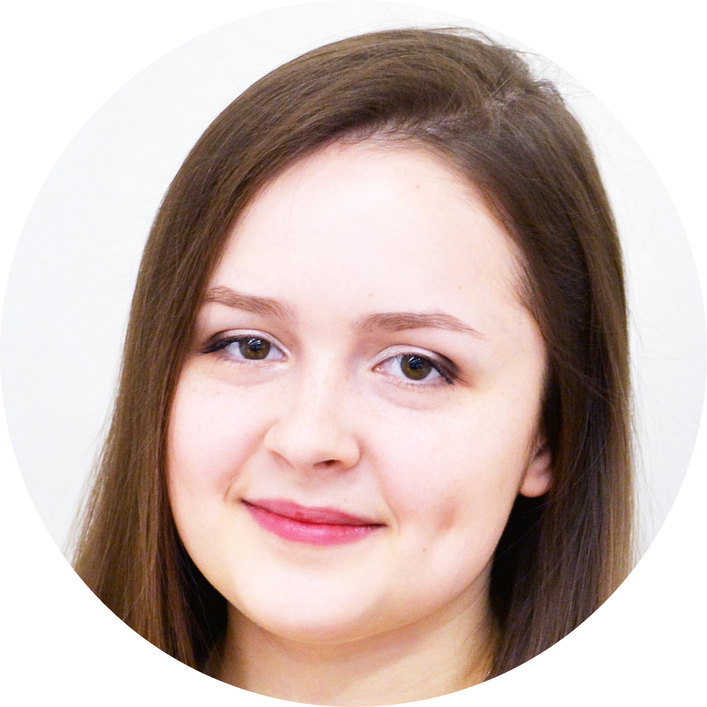

Růžena Bednářová
Full-stack web developer and ethical hacking enthusiast
I am former student of Cybernetics and robotics at CTU FEL and I am looking forward to studying Software engineering and technology at CTU FEL. I enjoy making projects that are combining technology and art, playing the piano, jumping and reading about psychology.
Education
Czechitas course - Programming Microelectronics
Useful courses I took while studying Cybernetics and robotics
(2018-2021 5/6 semesters finished)
- Algorithms and programming - Python
- Computer architectures - assembler, C, embedded programming (MZAPO board - controlling lights in application)
- Programming in C - C, embedded programming (Nucleo board - fractal art animation application)
- Robots - NXC, Lego Mindstorms
- Signals and systems - Matlab, Simulink
- Cybernetics and artificial intelligence - Python - finding optimal path for a robot
- Automatic control - Matlab, Simulink - controlling and
regulating systems
- Welding and Soldering in Electrotechnics
- Robotics - Matlab - programming robotic arms
Future studies
Work experience
Chip packer at ON Semiconductor (June 2017 - August 2017 Rožnov pod Radhoštěm)
Voluntary activities
wITches - vice-president, web developer and head of the Lego Mindstorms workshops team (February 2019 - present)
Skills
- C - intermediate
- Python - intermediate
- C++ - intermediate
- assembler - novice
- HTML - novice
Languages
- Czech - native speaker
- English - B2-C1
- French - A1
- German - A2
Projects
Contact me